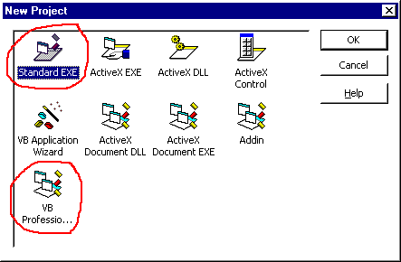

Before any programming can begin Visual Basic itself must be located and run. There are two ways to do this:
Using ‘Start’ button Shortcut:
Click on ‘Start’
Microsoft
Microsoft Visual Basic 5.0
Visual Basic 5.0
Directly from the Network:
Change directory to N:\Msoft\DevStudio\VB5
Then double-click VB5.EXE
If VB has been sucessfully started a dialog box like the one below should be seen. At this point select either ‘Standard EXE’ or ‘VB Professional Edition Controls’. The professional option contains a wider variety of controls in the toolbox.

Designing the interface. This is done interactively without the need to program. Screen objects (or controls) are selected from the toolbox, placed and sized using the mouse.
Setting the properties of the screen objects to change such things as colours and labels.
Writing program code to specify what will happen as users interact with the screen objects. This step is often described as providing the ‘functionality’.
Before setting out to write a program, one must have a task in mind. One must also understand the characteristics of the various screen objects in order to make good choices for the interface. VB Help gives a brief description of each toolbox icon (click on the ‘search’ button then enter ‘tool’, double click on ‘toolbox’ in the lower window), refer to this if unsure about which item to choose.
When you launch VB the environment is in design mode (see title bar). This means that the system is ready for you to start to build an application. You may also load an application that has been previously saved, run it, or continue to work on it. In design mode VB presents a blank form, labelled Form1. This is where the interface (or the first screen of the interface) is constructed.
To place a control on Form1, double click on a toolbox icon. That object appears in the centre of the form. From here the object may be dragged into place using the mouse. Clicking on the object reveals sizing handles as shown around the horizontal scroll bar below:
Moving the mouse over a sizing handle changes the cursor to a double headed arrow. Clicking and dragging on sizing handles allows the object to be sized horizontally and/or vertically.
Here is the interface for the calculator that is supplied as a sample application in ...\VB\samples\PGuide\calc\Calc.vbp. The familiar buttons are created using command buttons and the readout appears in a label.
Properties are set using the properties window. If this is not visible use the Windows menu to invoke it. In the calculator example above, the command buttons have been given captions corresponding to symbols such as ‘1’, ‘2’, ‘%’, ‘=’.
To set the properties of a screen object. Click on the object. The object box (under the properties title bar) then displays the name of the object. This is a list box that can be used to select any of the objects on the current form. Just below the object box is the settings box. This displays the current value of the property selected from the properties list underneath it. When the property value you want appears in the settings box it can be edited. This done by typing, or by selecting from a pre-defined list of possible values (obtained by clicking on the down arrow to the right of the settings list - if this is activated).
In the VB sample application, the calculator readout background colour is yellow. This was achieved by selecting the label object. Selecting the property BackColor, dropping down the colour palette and selecting the required colour cell.
The final step is writing the code that activates the application, or makes it run. The screen shot below shows a window displaying code for the ‘CE’ command button (CancelEntry).
Once the correct control object has been selected the next step is to choose which event the control is going to respond to. Any event for the current control can be selected by using the right hand drop-down menu. In the example below the window is currently showing code associated with the ‘Click’ event of the ‘CancelEntry_Click’ control object.
Note: Since version 4 of VB the code window can display multiple procedures. The horizontal line drawn half way down the window signifies a division between two different subroutines. The top one is ‘CancelEntry_Click’ and the bottom is ‘Decimal_Click’.
Below is a list of all Visual Basic events. It should be noted than each control only uses a subset of events. The top right combo box in the code window will display all relevant events for the current control object.
|
After completing the above three steps (design interface, set properties, and write code), the application can be run by clicking on . When you have finished running the application you can terminate its execution by clicking on . After stopping an application you will be returned back to design mode again where further changes can be made to the interface or program code.